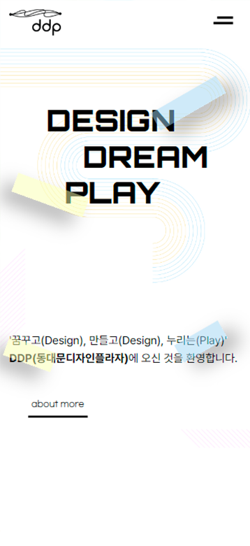

DDP
반응형 웹 사이트
2022.08.25 ~ 2022.09.01
개인 작업 (100%)
- #Responsive
- #HTML5
- #CSS3
- #JavaScript
- #jQuery

반응형 웹 사이트
2022.08.25 ~ 2022.09.01
개인 작업 (100%)


전체적인 디자인보다 정보 제공에 초점이 맞춰진 기본형 구조의 기존 사이트를, 디자인적인 요소들을 추가로 더해 DDP의 특징을 더 잘 보여 줄 수 있도록 리디자인 한다.

100%
Role : 리디자인 & 퍼블리싱
디자인 트렌드와 각종 문화예술 행사를 진행하는 DDP의 이미지와 기본형 배너와 정보 나열의 기존 웹사이트는 다소 어울리지 않는 느낌을 준다.
비중있게 차지하고 있는 메뉴바는 같은 내용을 두가지 방식으로 중복 노출하고 있으며, 그 외 자잘한 기능들 또한 맨 상단에 보여주는 등 정리가 필요해 보인다.
소식, 공지사항, 운영시간 등 각 부분들의 높낮이, 형식등이 다양하여 한 눈에 들어오지 않는다.
DDP의 곡선적인 특징을 이용한 일러스트 요소를 추가하고 메인 슬라이드 배너 형태도 곡선적으로 구현하여 사이트의 특징적인 부분을 강조한다.
하나의 메뉴바 형식만 선택하고, 네비게이션에서 노출될 필요 없는 기능들은 제외한다.
여러 정보들을 인포메이션 파트로 묶어 관리하며, 상시 노출이 불필요하다고 판단되는 부분은 다른 형식으로 보여지게 한다.
디자인과 퍼블리싱 간의 조절을 하는 것이 힘들었던 것 같다. 특히 메인 첫 파트의 디자인이 잘 나오지 않아 수정을 정말 많이 했다. 이 디자인을 지금의 내가 퍼블리싱으로 어떻게 얼마나 만들어 낼 수 있는지 생각해야 했기 때문에 더 여러번의 수정을 했었다.
최종적으로 곡선요소들을 사용한 디자인으로 하게 되었는데, 특히 곡선형태의 슬라이드 배너를 만드는 단계에서 고민을 많이 했던 것 같다.
현재 알고 있는 것 외에 새로운 방법들도 찾아 보면서 같이 적용할 수 있는지 어떤게 더 나을지 등을 계속 생각하면서 최대한 원래 구상한 의도대로 구현하려고 노력했다.
예를 들면, 곡선형 슬라이드 배너를 만들기 위해 mask, clip-path 등 다양한 마스킹 방법들을 찾아봤으나 아직 이해도가 낮아, 곡선형의 틀을 png로 만들어 position으로 슬라이드 레이어 위에 올려 곡선형으로 보이게 하는 방법을 택했다.
이번 프로젝트에서 유독 힘들었던 건 디자인과 퍼블리싱 간의 조절이었다. 원하는 디자인을 구현하기 위해선 코딩에 대해 더 많은 이해도가 필요했으며, 퍼블리싱이 불가한 경우 디자인을 변경하면서 타협점을 찾아 최대한으로 만들어 내려고 노력했다.
현재 잘 알고 있고 쓸 수 있는 태그가 제한적이다 보니 더 다양한 형태를 만들기 위해 앞으로 더 찾아보고 공부해야겠다는 생각이 들었다.
그래도 이런 프로젝트들을 통해서 자신의 부족한 부분, 잘 하는 부분 등을 다시 짚고 나아갈 수 있는 기회였다고 생각한다. 앞으로도 꾸준히 학습하고 실습하며 경험치를 쌓아 나갈 것이다.